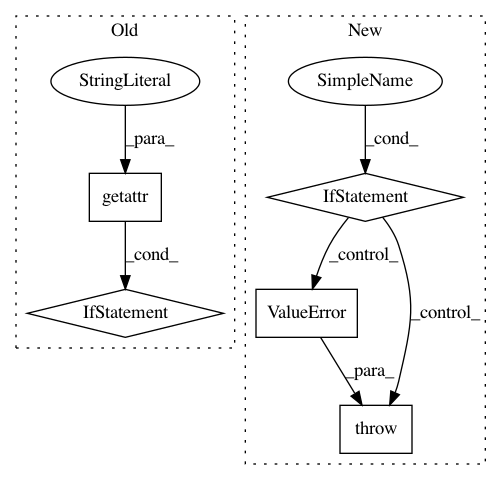

8d60cb0e1b7d501cf774039f55b450e26cceb26b,brian2/stateupdaters/exact.py,LinearStateUpdater,__call__,#LinearStateUpdater#Any#Any#Any#,94
Before Change
// the specifiers dictionary, it should be sufficient to just check for
// the presence of any non-constant specifiers.
for spec in specifiers.itervalues():
if (any(Symbol(spec.name) in element for element in matrix) and
not getattr(spec, "constant", False)):
raise ValueError(("The coefficient matrix for the equations "
"contains "%s", which is not constant.") %
spec.name)
symbols = [Symbol(variable) for variable in variables]
solution = sp.solve_linear_system(matrix.row_join(constants), *symbols)
b = sp.Matrix([solution[symbol] for symbol in symbols]).transpose()
After Change
if isinstance(symbol, Symbol)])
for symbol in symbols:
if symbol in specifiers and not getattr(specifiers[symbol],
"constant", False):
raise ValueError(("The coefficient matrix for the equations "
"contains "%s", which is not constant.") %
symbol)
symbols = [Symbol(variable, real=True) for variable in variables]
solution = sp.solve_linear_system(matrix.row_join(constants), *symbols)
b = sp.Matrix([solution[symbol] for symbol in symbols]).transpose()
In pattern: SUPERPATTERN
Frequency: 3
Non-data size: 5
Instances
Project Name: brian-team/brian2
Commit Name: 8d60cb0e1b7d501cf774039f55b450e26cceb26b
Time: 2013-05-03
Author: marcel.stimberg@ens.fr
File Name: brian2/stateupdaters/exact.py
Class Name: LinearStateUpdater
Method Name: __call__
Project Name: tensorflow/agents
Commit Name: b5ae1c6bde39f5130c975992198f1f8ee5200f9a
Time: 2020-06-22
Author: ebrevdo@google.com
File Name: tf_agents/policies/categorical_q_policy.py
Class Name: CategoricalQPolicy
Method Name: __init__
Project Name: brian-team/brian2
Commit Name: 1a08386ee50a4798fb08eeaa02fb95f3b7ac6ea0
Time: 2013-07-03
Author: marcel.stimberg@ens.fr
File Name: brian2/stateupdaters/exact.py
Class Name: LinearStateUpdater
Method Name: __call__